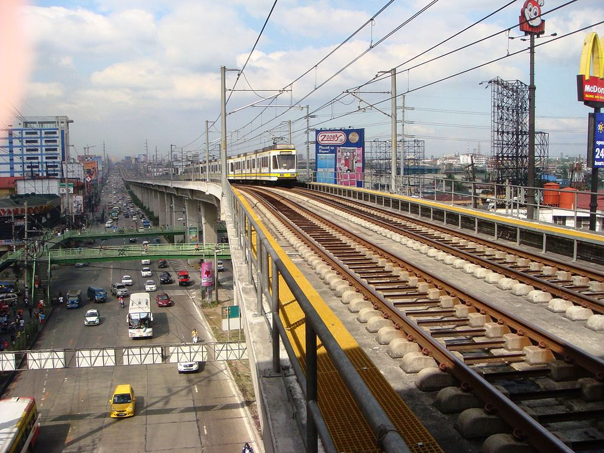

Fernando Poe Jr.
(Formerly Roosevelt)
LRT-1 station
Fernando Poe Jr. station (also known as FPJ station) is the current northern terminus of the Manila Light Rail Transit (LRT) Line 1 and was constructed as part of the Line 1 North Extension Project. It opened on October 22, 2010 as Roosevelt and was renamed to Fernando Poe Jr. on August 20, 2023, two years after the namesake avenue was officially renamed after the Filipino actor.
Fernando Poe Jr. is one of the two Line 1 stations serving Quezon City, the other being Balintawak.
It is located at the boundary of barangays Veterans Village and Ramon Magsaysay (Bago Bantay) in Quezon City, both of Projects 7 and 8, respectively. It links to Congressional Avenue and Fernando Poe Jr. Avenue.
| Fernando Poe Jr. | |||||||
|---|---|---|---|---|---|---|---|
|  | |||||||
| General information | |||||||
| Other names | FPJ | ||||||
| Location | 1039 EDSA, Ramon Magsaysay & Veterans Village, Quezon City, Metro Manila, Philippines | ||||||
| Owned by | Department of Transportation Light Rail Transit Authority |
||||||
| Operated by | Light Rail Manila Corporation | ||||||
| Line(s) | Line 1 | ||||||
| Platforms | 2 (2 side) | ||||||
| Tracks | 2 | ||||||
| Construction | |||||||
| Structure type | Overpass | ||||||
| Parking | Yes (WalterMart North EDSA, Jackman Plaza Muñoz, Motortrade Plaza) | ||||||
| Accessible | Yes | ||||||
| Other information | |||||||
| Station code | FPJ | ||||||
| History | |||||||
| Opened |
October 22, 2010
December 5, 2022 (reopening) |
||||||
| Closed | September 5, 2020 (temporary) | ||||||
| Previous names | Roosevelt (2010-2023) | ||||||
| Services | |||||||
|
|||||||
Fernando Poe Jr. is one of the two Line 1 stations serving Quezon City, the other being Balintawak.
It is located at the boundary of barangays Veterans Village and Ramon Magsaysay (Bago Bantay) in Quezon City, both of Projects 7 and 8, respectively. It links to Congressional Avenue and Fernando Poe Jr. Avenue.
Initial planning and construction
The station was first planned for the second phase of the MRT Line 3, known as Muñoz station. The second phase would have extended the MRT Line 3 from its northern terminus at North Avenue to Monumento to create a seamless rail loop around Metro Manila. The station was planned to be located near the San Francisco del Monte River.The second phase of the MRT-3 was shelved in favor of the Line 1 North Extension Project, a 5.4-kilometer extension of LRT-1 to the North Avenue station of MRT Line 3 as part of the MRT-LRT closing the loop project to integrate the operations of the Line 1 and Line 3. The station site was changed from the San Francisco del Monte River to the front of WalterMart North EDSA. However, the integration of MRT-3 and LRT-1 operations did not happen until the expected partial opening of the North Triangle Common Station in 2023. Construction of the North Extension started in July 2008 and was completed in 2010. Roosevelt station was opened on October 22, 2010.
The station was named after Roosevelt Avenue, which was in turn named in honor of U.S. President Franklin D. Roosevelt. The avenue was later renamed Fernando Poe Jr. Avenue on December 10, 2021.
Temporary closure
On August 7, 2020, it was announced that Roosevelt station would be temporarily closed from September 5. As part of the construction of the North Triangle Common Station, the tracks extending eastward from Roosevelt station have to be realigned in order to provide the necessary connection to the Common Station. Hence, during this temporary closure, Balintawak station would once again serve as the northern terminus of the line. Originally scheduled until December 8, 2020, the temporary closure was later extended until further notice.On November 26, 2022, the Light Rail Manila Corporation announced the planned reopening of Roosevelt station on December 5, 2022, pending testing and system adaptation to the new signaling system; they followed up and confirmed that the reopening would proceed as scheduled.
Renaming
On August 20, 2023, Roosevelt station was renamed Fernando Poe Jr. station after the Filipino actor.There are several buses, jeepneys, and UV Express plying EDSA, as well as Congressional Avenue and Fernando Poe Jr. Avenue. The station serves as an interchange with the EDSA Carousel, which is accessible through the emergency exits of the station.
The station is close to various shopping places and malls, particularly WalterMart North EDSA, Jackman Plaza Muñoz, Muñoz Market and S&R Membership Shopping - Congressional.
- On November 14, 2014, a signalling fault at Roosevelt station limited the operations between Monumento and Baclaran stations. The situation normalized at 3:57 PM.

Overview of the track from the station
| Existing stations | |
|---|---|
|
Baclaran
EDSA Libertad Gil Puyat Vito Cruz Quirino Pedro Gil United Nations Central Carriedo |
Doroteo Jose
Bambang Tayuman Blumentritt Abad Santos R. Papa 5th Avenue Monumento Balintawak Fernando Poe Jr. |
| Under construction | |
|
Redemptorist
MIA Asia World Ninoy Aquino |
Dr. Santos
Las Piñas Zapote Niog |
| North Triangle | |